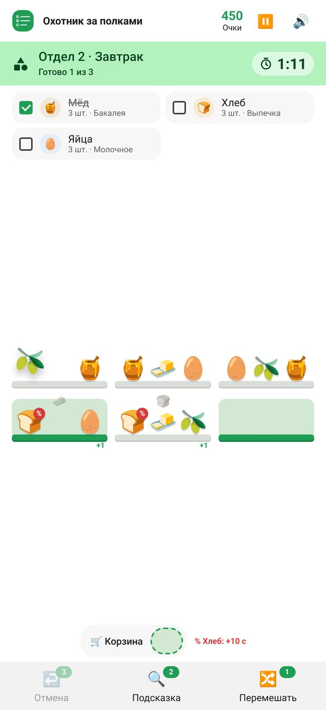

В каждом отделе тебя ждёт список покупок. Нажми на товар, затем на полку со свободным местом. Поставь на одну полку три одинаковых товара — она очистится, а задний ряд выдвинется вперёд. Отметь всё из списка, пока не вышло время, и получи свой чек.

Игра бесплатная?
Да. Игру можно бесплатно скачать и играть. Есть необязательные встроенные покупки (набор подсказок и Премиум) и необязательная реклама за награду; для прохождения отделов они не нужны.
Работает ли игра без интернета?
Да. Играть можно без подключения к интернету и без аккаунта.
На каких устройствах работает?
На iPhone, из App Store.
Вопросы или проблемы: oguz.kamburoglu@gmail.com
Политика конфиденциальности (на турецком)
Türkçe · English · Deutsch · Español · Français · Português · Русский